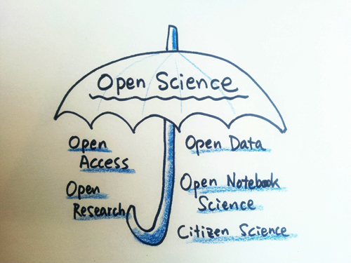
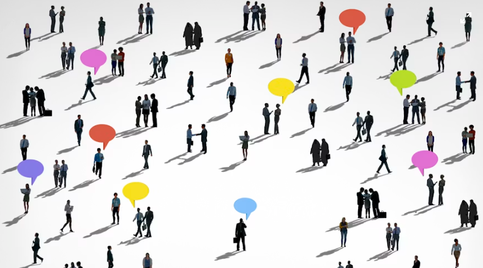
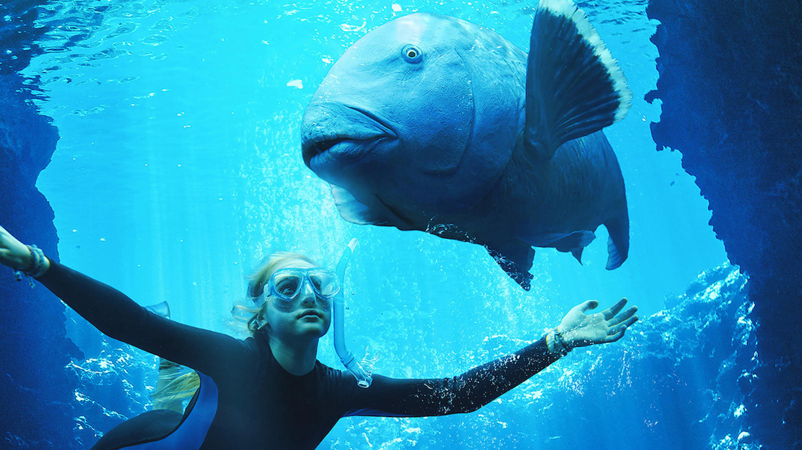

JTA’s commitments
“In the end, we will conserve only what we love, we will love only what we understand, and we will understand only what we are taught.” Baba Dioum at the General Assembly of the IUCN held in New Delhi in 1968.
I would like to help ensure that the scientific community creates reliable and accessible knowledge that benefits all living beings. You can find my contributions toward this goal below.
🌞 Open Science1

Volunteering
- Volunteer with SORTEE2 (Society for Open, Reliable and Transparent biology in Ecology and Evolution):
- Secretary (2026)
- Member of the Board of directors (2026-2029)
- Conference Committee member: responsible for organising the 24-hour online SORTEE conference on open science:
- Past chair (2026): advises the current chair
- Chair (2025): led the committee team and oversaw its work
- Program manager (2023-2024): built the conference program
- Volunteer with the Peer Community Journal3:
- Data editor (2026-ongoing): reviewing data and code before publication
- Assistant editor (2023-2025): final edits and reference checks before publication
Training others
- Organised a shared PCJ/SORTEE 5-day booth at the 2026 ISBE conference
- Participated in the SORTEE guide for collaborations
- Attended the Train-the-Trainer workshops in 2026 offered by the Horizon Europe initiative iRISE
- Attended the Open Science Instructor Training in 2025 offered by the LMU Open Science Center
- Introduced and informally discussed open science issues and solutions with colleagues in my PhD and postdoc labs
- Created and delivered a presentation to my PhD and postdoc teams on key problems in the current publication system and how to address them
Practices
- Carefully choose journals for publication
- Created and shared a table comparing journals in biology based on their publication model and publisher.
- Published the final paper from my PhD in the Peer Community Journal. It has been a challenging process to stand up against what my supervisors preferred.
- Published my first postdoc paper in Coral Reefs. I initially submitted the paper to Marine Ecology Progress Series, but it was rejected. I couldn’t find any other ethical journal in marine biology within the scope of my study, so I then chose Coral Reefs. It is affiliated with a scientific society but is hosted by Springer and has a hybrid publication system.
- I plan to publish my future publications in the PCJ or fully open-access journals hosted by non-profit organisations.
- Share datasets and code following FAIR principles. I have shared all datasets and code for publications in which I was responsible for data analysis. I have continuously improved my practices and deposited these materials in non-profit, free, long-term repositories. These deposits included clear annotations, structured folders, a README file, a data dictionary, an appropriate licence, and data-wrangling steps.
- Publish in open access. Find PDF of my publications on the Papers page.
Getting trained
- Attended the Summer School Open Science 2023 hosted by the LMU Open Science Center
- Attended the Oxford|Berlin Summer School on Open Research 2021
- Attended annual SORTEE conferences on open science since 2021
🌈 Diversity, Equity and Inclusion (DEI)4

Volunteering
- Volunteer in the DEI Committee at SORTEE in 2026
- Led the creation of a micro-grant scheme aimed at improving equitable access to SORTEE conferences
- Reformed the selection procedure for plenary speakers at the SORTEE conferences to incorporate DEI criteria
Collaborative projects
- Participate in three collaborative projects, led by the amazing Malgorzata (Losia) Lagisz:
- Diversity of DEI committees across international learned societies in Ecology and Evolutionary Biology
- Diversity of awards given by international learned societies in Ecology and Evolutionary Biology
- Creating a global list of international learned societies in Ecology and Evolutionary Biology
Practices
- Display LGBTIQ+ and First Nations flags in my office
- Use a color blindness simulator to design my figures
Getting trained
- Attended the Ally LGBTIQ+ training in 2023 offered by Macquarie University
- Attended the Aboriginal Culture Safety Training in 2023 offered by Macquarie University
♻️ Sustainable science
Scientists aim to protect living beings, and yet our work often contributes to climate change and pollution. For example, an academic researcher from the CNRS emits more CO₂ annually than the average French citizen. This needs to change.
Practices
- Use trains for travel since 2022, with exceptions for the 2023 IPFC in New Zealand and fieldwork in Exmouth in 2025
- Avoid buying new equipment:
- Take the time to ask colleagues and explore storage rooms for equipment needed for my experiments instead of purchasing them
- Continue using the same computer since 2016
❤️ Animal welfare
Practices
- Limit lab experiments. During my postdoc, I chose to conduct only fieldwork and no laboratory experiments5.

🤷 Why do science?
I see science as a tool to create connections between all living beings, inspire wonder, foster care, and support living together respectfully. We can only take good care of those we truly know: their needs, their limits, and what doesn’t bother them actually.
I do not want to continue the tradition of using science as a tool to exploit other living beings for the comfort of a small group of humans. Nor do I want science to focus on finding illusory technological solutions to the destruction and suffering caused by certain human activities.
During my research journey, I have also noticed that the current scientific system often produces unreliable and inaccessible results, while remaining unequal in terms of who can participate and whose ideas are valued. This is why I have started working to make small contributions toward improving the system.
Footnotes
What is Open Science? Open science involves many initiatives and practices that aim to make scientific results reliable, available for everyone and beneficial for humanity, while opening the process of scientific creation to everyone. You can find a nice description of what is open science by the UNESCO here.↩︎
What is SORTEE? SORTEE is not just a scientific society – it is an inspiring community full of motivated and knowledgeable people. I highly recommend joining, regardless of your career stage or experience with open science. As a member, you will gain access to an active Slack channel for support, information on open science initiatives and job opportunities, free events like conferences, code clubs, workshops, seminars, and networking opportunities to find collaborators.↩︎
What is the Peer Community Journal? The Peer Community Journal (PCJ) is the journal of the Peer Community In (PCI) initiative. PCI seeks to address issues in the current publication system by creating communities in different fields to review and recommend preprints. This aims to free researchers from reliance on commercial publishers and promotes evaluating their work based on quality rather than metrics. Each PCI recommendation includes a short paragraph explaining the importance and quality of the publication, making it easier to assess a researcher’s work by reading these recommendations instead of looking at their h-index or citation counts.↩︎
What is DEI? Diversity, Equity and Inclusion involves many initiatives and practices that aim at creating an environment where everyone feels safe, welcomed, respected and valued and gets the same opportunities to participate in the scientific process.↩︎
Keeping marine fish in aquariums is challenging, and sourcing these fish can be problematic. I wanted to avoid collecting fish from the reef or dying in the lab for my research. During my field observations, fish participated in the experiments willingly, so I didn’t need to catch them. Unfortunately, I did have to catch and sacrifice ghost crabs as part of my experiments to use them as food for fish. However, there was no waste – every crab I caught was consumed by fish. Wrasses love eating crabs!↩︎